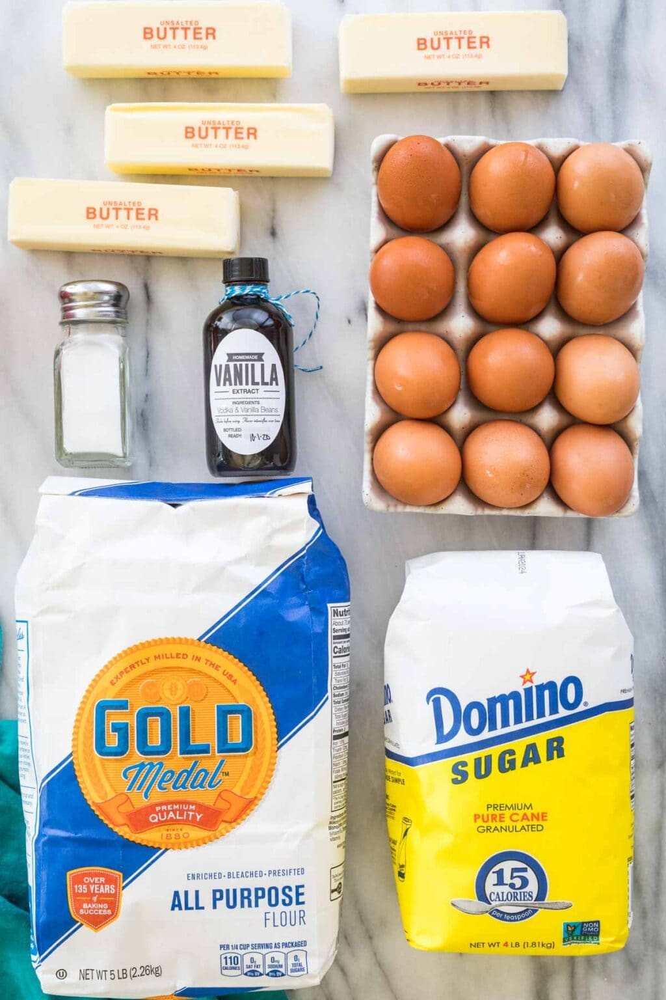
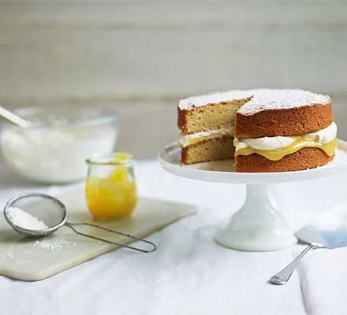
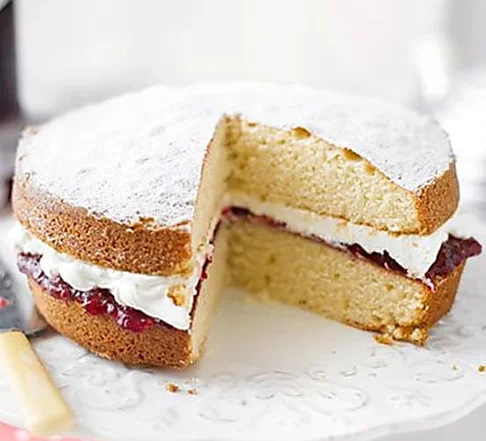

What You Need (and What You DON’T)
Ingredients:Butter,sugar,eggs,vanilla,salt & flour
How to Make:
Heat oven to 180C/160C fan/gas 4, butter and line the base of two 20cm spring-form cake tins with baking parchment.
Using an electric whisk beat the butter and sugar together until pale and fluffy. Crack the eggs in one at a time and whisk well, scraping down the sides of the bowl after each addition. Add the lemon zest, vanilla, flour, milk and a pinch of salt. Whisk until just combined then divide the mixture between the two tins.
Bake in the centre of the oven for 25-30 mins until a skewer inserted into the middle of each cake comes out clean. After 10 mins remove the cakes from their tins and leave to cool completely on a wire rack. Fill how you like. My personal favourite is a good dollop of lemon curd and some fresh cream, then dust the top with icing sugar. Will keep for 3 days.
